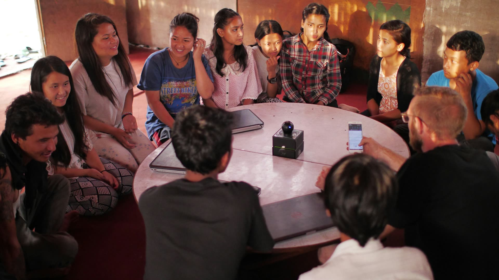

The Three Pillars
Equal weight. No hierarchy.
None of these three pillars is the "real" purpose of the club with the others as add-ons. Each one needs the other two to work.

Community
Build an actual network of Asian students and allies at Mayo — one that exists beyond a single club fair table or one meeting a month.
- Regular meetings and social events where students across grades and backgrounds actually get to know each other.
- Space for the many different cultures, languages, and family histories under the "Asian, Pacific Islander, and Desi" umbrella — this club is not built around one culture.
- An explicit welcome to allies. You do not have to be Asian to belong here.
- Mentorship and peer connections between grade levels, especially for incoming students.
- Traditions — food, celebrations, showcases — that build belonging without being the whole point of the club.
Education
Give the community real context: history and current events that most classrooms don't have time to cover in depth.
- Asian American history — immigration waves, labor history, exclusion laws, and the movements that pushed back against them.
- Discrimination and representation, from historical policy to present-day media and politics.
- Current issues affecting Asian, Pacific Islander, and Desi communities specifically, not just as a footnote in broader conversations.
- The distinct cultures and histories inside "Asian" — East Asian, South Asian, Southeast Asian, and Pacific Islander experiences are not interchangeable, and this pillar treats them that way.
- Speaker sessions, discussion nights, and resource-sharing so members leave with more than a vibe — they leave with facts.
Advocacy
This is the pillar that makes Mayo ASA substantially more ambitious than a typical cultural club.
- Identify specific, real problems affecting students at Mayo — not vague grievances, but things that can actually be described and addressed.
- Collect evidence: surveys, documented experiences, research, and comparisons to how other schools handle similar issues.
- Work directly with school administrators as partners in solving problems, not just as an audience for complaints.
- Collaborate with other student organizations pursuing related goals, rather than working in isolation.
- Pursue concrete changes — policy, curriculum, or practice — and follow through until something actually changes.
- Take that same advocacy energy overseas: raising funds for Nepal flood relief after the August 2026 flash floods. See our Global Impact page for the plan.
These three pillars aren't a checklist to complete in order — they run at the same time, all year. A community night might turn into an education discussion. An education discussion might surface a problem worth advocating on. That's by design.
Ready to join?
Membership is open to members and allies alike.